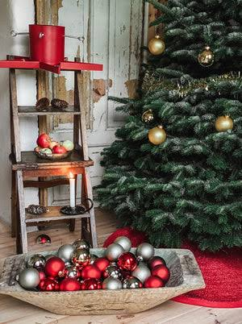
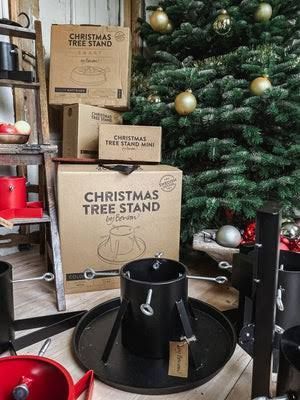
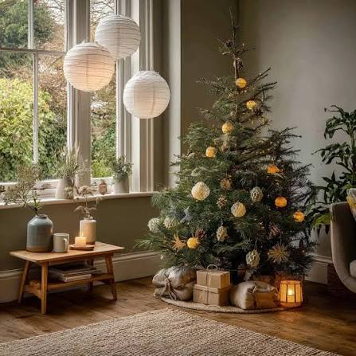

That is what makes the Swedish brand by Benson interesting.
Rather than treating a Christmas tree stand as a disposable seasonal accessory, by Benson approaches it as a functional design object: durable materials, careful construction and a mechanism intended to keep the tree stable while allowing the user to make small corrections to its position.
For a minimalist or Japandi interior, that distinction matters. The Christmas tree may be the seasonal focal point, but everything supporting it should ideally feel quiet, useful and visually resolved.

Why by Benson Stands Out
By Benson's approach comes from a long relationship with Christmas trees rather than from seasonal home-decoration trends.
The company traces its roots to Sweden, where its founder grew up among Christmas trees in Småland and began working with them at a young age. The family connection to Christmas tree production dates back to 1973.
That background helps explain the practical emphasis of the products.
The Christmas tree stands are designed around a simple problem: how to keep a real tree securely positioned while giving the user enough control to correct its angle and maintain an adequate supply of water.
Discover by Benson
Explore the by Benson collection and see the current Christmas tree stand options.
Explore by Benson →There is something particularly appealing about this approach when choosing Christmas objects for a home.
Instead of adding another decorative item that exists only for a few weeks, the stand performs a necessary function while remaining visually restrained.
The Christmas Tree Stand Star
The by Benson Christmas Tree Stand Star is one of the brand's central Christmas tree stand designs.
Its construction uses four fastening screws to secure the trunk, giving the user control over the position of the tree rather than relying on a fixed opening alone.
The Star measures approximately 51 cm and is designed for trees up to around 3 metres tall. Depending on the trunk, the water capacity is approximately 3.2 litres.
For anyone choosing a Nordmann fir or another traditional European Christmas tree, the ability to stabilize and correct the tree's position is particularly relevant. A perfectly straight trunk is not guaranteed in a natural tree, so adjustment becomes part of the setup rather than an afterthought.
The four-screw system is also one of the details that makes the Star feel more like a piece of functional equipment than a temporary Christmas accessory.
Once the tree is positioned, the screws can be adjusted individually to help compensate for small irregularities in the trunk and achieve a more balanced result.
What About the Christmas Tree Stand Deluxe?
The Christmas Tree Stand Deluxe takes a slightly different approach while keeping the same practical philosophy.
At approximately 40 cm, it is more compact than the Star and also uses four fastening screws. It includes a water tray with a capacity of around 3.2 litres, depending on the tree trunk.

The Deluxe makes particular sense for interiors where the Christmas tree needs to feel integrated rather than oversized.
Its restrained form does not compete with the tree itself, which is exactly the kind of relationship that works well with Scandinavian and Japandi-inspired decoration.
Why It Works With Japandi Christmas Decor
Japandi interiors tend to work through restraint: natural materials, muted colours, useful objects and enough empty space for individual elements to breathe.
Christmas decoration can easily disrupt that balance.
Suddenly there are ornaments everywhere, shiny surfaces competing for attention and seasonal objects that have no relationship with the rest of the room.
A Christmas tree stand cannot solve all of that, of course. But a visually quiet foundation helps.
By Benson's stands have the kind of understated functional character that fits naturally into a more considered Christmas setup.
Function Before Decoration
One of the things we appreciate about the by Benson approach is that the design starts with the practical problem.
The stand needs to hold a real tree securely.
The tree needs access to water.
The user needs to be able to adjust its position.
And the construction needs to survive repeated seasonal use rather than being treated as a single-use purchase.
Those requirements sound obvious, but they are precisely the details that can become frustrating with inexpensive Christmas tree stands.
Water Capacity Matters More Than It Seems
A real Christmas tree continues to require water after it has been brought indoors.
That makes the reservoir an important part of the stand rather than simply an additional feature.
The by Benson Star and Deluxe models offer approximately 3.2 litres of water capacity, depending on the trunk.
For someone who wants a Christmas tree to remain fresh-looking throughout the season, having a reasonably substantial reservoir can make the maintenance routine simpler.

The visual result also benefits from the same philosophy: warm lighting, natural materials, a restrained number of ornaments and a tree that remains the main seasonal element rather than becoming part of visual clutter.
The by Benson Rug Deluxe
A Christmas tree stand is functional by necessity, but the area immediately around it can also become part of the visual composition.
This is where the by Benson Rug Deluxe makes sense.
The Rug Deluxe is made from jute and measures approximately 100 cm in diameter. Its natural texture and neutral appearance make it a natural companion for a minimalist Christmas tree.
Rather than introducing another strongly decorative pattern, the rug creates a quiet visual boundary around the tree while keeping the materials grounded and natural.
Recommended Source
See the by Benson Rug Deluxe and create a more considered Christmas setting.
See the Rug Deluxe →Materials, Durability and Long-Term Use
Durability is one of the more important parts of the by Benson philosophy.
The idea is not simply to produce something that looks appropriate for one Christmas season, but to create products that can remain useful over time.
That approach also changes the way a Christmas tree stand should be considered.
A low-cost stand that needs to be replaced every few years may initially appear inexpensive, but a well-constructed stand designed for repeated seasonal use can make more sense as a long-term household object.
For people who prefer to buy fewer things and use them for longer, this is perhaps the most interesting part of the by Benson proposition.
What We Like About the Design
The strongest aspect of the by Benson Christmas tree stands is that the design does not try to compete with the Christmas tree.
The stand remains visually quiet while solving several practical problems at once: stabilization, angle correction and water retention.
That combination is particularly appropriate for Scandinavian and Japandi-inspired interiors, where functionality is usually expected to be part of the aesthetic rather than hidden behind unnecessary decoration.
Things to Consider Before Buying
A Christmas tree stand is not a universal product. The right model depends on the size and type of tree you intend to use.
The Star is designed for trees up to approximately 3 metres, while the Deluxe is a more compact option.
It is also worth checking the dimensions of your tree trunk before purchasing. Natural Christmas trees vary considerably, and the stand needs to accommodate the trunk while leaving enough room for the fastening mechanism to work correctly.
For Nordmann firs and other common European Christmas trees, the by Benson range is designed to accommodate several tree types, although the Mini model has more specific limitations.
As with any real Christmas tree, the stand should also be placed on a stable, level surface and checked periodically during the season.
Designed for a More Intentional Christmas
There is an interesting difference between buying Christmas decoration and buying something that supports the Christmas experience.
Decoration is often temporary by nature. A tree stand, on the other hand, is there because the tree needs it.
By Benson occupies that less visible category of object: something functional enough to disappear into the background, but considered enough to deserve attention when choosing it.
That is very close to the principle of intentional consumption.
Instead of buying the cheapest possible object simply because it will only be used for a few weeks, the question becomes whether the product can earn its place in the home through repeated use and practical value.
Build Your Minimalist Christmas
Christmas Tree Stand Star + Rug Deluxe + understated Scandinavian design.
Shop by Benson →Our Editorial Take
The by Benson Christmas Tree Stand is an example of a product where the value is found in the details rather than in visual novelty.
The four fastening screws, water capacity and ability to correct the tree's position all address practical problems that become very obvious once a real Christmas tree is standing in the living room.
The Swedish design background adds another layer: the products are intended to be functional objects that can remain useful across seasons rather than disposable Christmas accessories.
For a home built around natural materials, warm lighting and minimal decoration, that restraint can be an advantage.
Before You Buy
Before choosing a by Benson Christmas tree stand, consider three things:
Tree height. Make sure the model you choose is appropriate for the height of your tree.
Trunk size. Natural trees vary, so check the available dimensions and fastening system before ordering.
Water requirements. A real tree needs regular access to water, making reservoir capacity an important practical consideration.
Check Current Availability
See the latest by Benson Christmas tree stands, prices and availability.
Check current price & availability →FAQ
Is by Benson a Swedish brand?
By Benson has Swedish roots and its story is closely connected to Christmas tree production
in Småland. The company's approach to Christmas products is strongly influenced by that
background.
Which by Benson Christmas Tree Stand should I choose?
The choice depends mainly on the size of your tree and the dimensions of its trunk. The
Star is designed for trees up to approximately 3 metres, while the Deluxe is a more compact
alternative.
Can the by Benson Christmas Tree Stand be used with a Nordmann fir?
Yes. By Benson states that its Christmas tree stands are suitable for several types of
Christmas trees, including Nordmann firs, with the Mini model being the exception.
How much water does the by Benson Christmas Tree Stand hold?
The Star and Deluxe models hold approximately 3.2 litres of water, depending on the tree
trunk and setup.
Why are four fastening screws useful?
The four screws allow the trunk to be secured and adjusted from different points. This can
help correct the angle of a natural tree and create a more stable position.
Is the by Benson Christmas Tree Stand suitable for a minimalist interior?
Its restrained, functional design makes it particularly compatible with minimalist,
Scandinavian and Japandi-inspired interiors, where practical objects are generally
preferred over unnecessary visual decoration.
Is the by Benson Rug Deluxe suitable for a minimalist Christmas?
The natural jute construction and neutral appearance make it a simple way to define the
area beneath a Christmas tree without introducing a strong decorative pattern.
Where can I buy by Benson products?
By Benson products are available through the brand's online store. Availability, prices and
regional delivery options can vary, so it is worth checking the current listing before
purchasing.
Recommended Source
Explore the current by Benson collection and Christmas products.
Visit by Benson →Affiliate disclosure: This article contains affiliate links. If you purchase through one of our links, Nomadisch may receive a commission at no additional cost to you. This does not affect our editorial approach or the price you pay. See our Affiliate Disclosure for details.